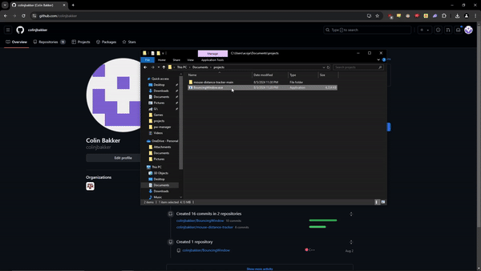

FPS Game
FPS Game is my most recent project. It aims to be a fast paced shooter similar to ULTRAKILL or, I have been told, Kovaak's

I originally planned to use OpenGL as a follow up to my Pong game. However, after some research, I decided to use raylib instead. Raylib is incredibly well documented and has lots of example code, so for the first time I was able to sart this project without the help of a video guide. I made use of a more object-oriented approach, separating out different parts of the game, such as the player, enemies, and projectiles into structs to be created and destroyed as needed within the game. This helped me keep the code more organized and readable compared to my previous projects.
The biggest challenge for me so far was understanding the transformations required to make a 3d camera. I used a little linear algebra in my bouncing window project, but this was my first application of linear algebra in three dimensions. I took linear algebra last year, but hadn't applied it or fully understood it until now. I also do not have experience with game development, it is challenging to make the game engaging and fun, and the amount of features needed to make a complete game is daunting.
Currently the game has you endlessly shooting black capsules. I want to implement upgrades for the player, different weapons, a more robust movement system, and different levels, potentially bosses. I also want to look into importing and rendering meshes for the enemy and player and improving the graphics with lighting as I learn more about computer graphics in my course this semester.
Bouncing Window
Bouncing Window is an application window that moves around the screen and rotates according to physics rules. It is also interactive, able to be dragged by the user. It aimsw to be an application someone can fling around their screen when they are bored or when they are thinking like a digital fidget spinner.

This project was created in C++ using the wxWidgets library. I recieved a lot of help from this video by javidx9 for linking the library to my Visual Studio project and getting a window running.
The key feature that I am most proud of is the simulation of rotation and angular velocity. It was also the greatest challenge. From my research, application windows cannot rotate. Obviously, this is not a feature that is required by many applications. However, I was not satisfied with the original version, without rotation.
My solution was to create bitmaps. wxWidgets had support for changing the shape of a window using bitmaps, typically used when an application wants a custom shaped splach screen on startup. I algorithmically created bitmaps for each angle between zero and ninety degrees, which would be switched between to represent the calculated angle of the window. Unfortunately, this method meant that the title bar had to be removed, including the x button. I would have liked the title bar to rotate with the application window, but at the moment, I am still investigating how this can be done. As a compromise, I stuck an x button in the center so that the application can at least be closed in the meantime.
This was the first project that I created that could be run on other people's computers without issue, the only issue being that the user is given a warning by windows defender when they try and run it. In the future I plan to recreate this application with better coding style, the current implementation is a complete mess. I would also like to refine the physics simulation. I do not have much physics education, so my implementation came out looking a little janky, especially with rotation. I would also like to reimplement the title bar, if it is possible.
Pong
Pong is a very simple game I created to gain a better understanding of computer graphics and GUI, and the use of libraries. With the help of learnopengl.com written by Joey de Vries, I used OpenGL, GLFW, and GLAD libraries. I will not lie, I was a little out of my depth. I decided to keep the game simple, graphically. I spent most of my time making the AI as good as possible. It follows the ball when it is moving towards the player, and as soon as the player's paddle hits the ball, it calculates the path and moves to intercept it at the point on the paddle that causes the ball to move at a difficult-to-predict angle. I learned how I can link C++ libraries and build to executables using Visual Studio.

Unfortunately, for some reason I am not sure of, when the executable is downloaded and run from GitHub, the player paddle is invisible. I am still not totally comfortable with OpenGL, but I am currently enrolled in computer graphics, where we will be building all of out projects with OpenGL. Hopefully, over the course of this semester I am able to fully grasp OpenGL and am able to make better OpenGL projects.
Wordle Clone
Wordle clone is a project that I, unfortunately, cannot share the source code for because it was my final project for my programming languages course. I will include this gif however.

This project made use of the Java programming language and the JavaFX library. This was the first time that I had ever created a graphical project (excluding html), and this was the project that sparked my interest in creating GUI programs and games. Although my professor implored us to use SceneBuilder, I decided to program all of the GUI elements manually at the advice of this article by Dave Barrett. His guide was also taught me the model-view-controller design pattern, which I implemented in this project. I gained a ton of knowledge about how to use libraries, how events are handled by GUI applications, and how GUI programs should be organized in large part thanks to this decision to not use SceneBuilder.
Mouse Distance Tracker
Mouse Distance Tracker was a fun quick project I created in about an hour during some down time in my internship. It's purpose was to track how far, in meters, my mouse moved over the course of the remainder of my internship.

I created this little widget using Python and the tkinter, pyautogui and screeninfo modules. This was very simple, and honestly I didn't learn much, but it was fun and also surprising how many kilometers I traveled. If I remembered the distance I would write it here.